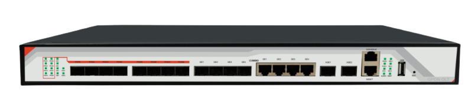

_________________________________
Código Produto: 47943
► Padrão ITU G.984.xe IEEE 802.3x e FSAN
► 1 Interface USB
► 4 Portas GE de uplink
► 4 Portas SFP de uplink
► 2*10 GE Portas de uplink
► 8GPON Ports
► Cada porta GPON suporta a divisão de 1:128 Splitter
► Suporte 512 terminais acessando